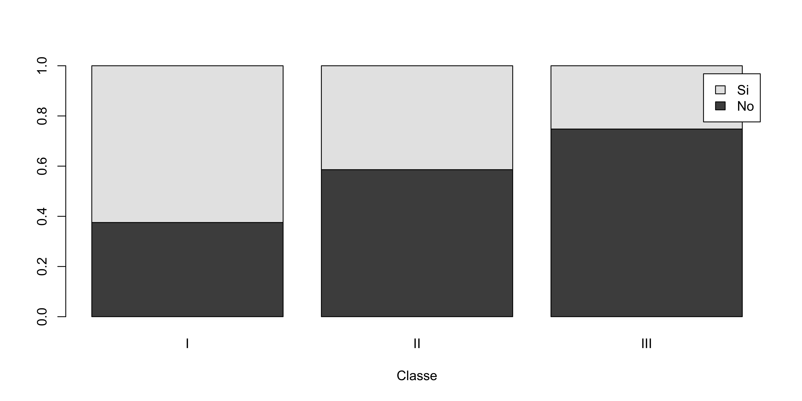

Gli esercizi R associati sono disponibili a questo link
Descrizione del problema
Dopo il disastro del Titanic, una commissione d’inchiesta del British Board of Trade ha compilato una lista di tutti i 1316 passeggeri includendo le seguenti informazioni:
l’esito (salvato, non salvato)
la classe (I, II, III) in cui viaggiavano
il sesso, l’età, etc.
In questa unità ci limitiamo a considerare le informazioni sull’esito e la classe.
Nota
Ovviamente, si tratta degli stessi dati considerati nell’unità O del corso Statistica I.
Importazione dei dati titanic
Come fatto in precedenza, anzitutto è necessario scaricare il file titanic.csv e salvarlo nel proprio computer. Link al file
freq_abs_classe freq_rel_classe
I 325 0.2469605
II 285 0.2165653
III 706 0.5364742
Frequenze congiunte
Una sintesi che possiamo operare consiste nel costruire una tabella, detta tabella di contingenza oppure tabella a doppia entrata.
In R si usa anche in questo caso il comando table, con due argomenti:
tab <-table(titanic$Salvato, titanic$Classe)tab
I II III
No 122 167 528
Si 203 118 178
In questa tabella sono riportate le frequenze congiunte, ad esempio, il valore 203 rappresenta il numero di passeggeri che viaggiavano in I classe e che sono sopravvissuti.
Tabella di contingenza
Siano x ed y due variabili aventi modalità c_1,\dots,c_h e d_1,\dots,d_k, rispettivamente.
Una tabella di contingenza (a due variabili) per le coppie di dati (x_1,y_1),\dots,(x_n,y_n) si presenta nella seguente forma:
Variabile y
Variabilex
d_1
\dots
d_j
\dots
d_k
Totale
c_1
n_{11}
\dots
n_{1j}
\dots
n_{1k}
n_{1+}
\vdots
\vdots
\vdots
\vdots
\vdots
c_i
n_{i1}
\dots
n_{ij}
\dots
n_{ik}
n_{i+}
\vdots
\vdots
\vdots
\vdots
\vdots
c_h
n_{h1}
\dots
n_{hj}
\dots
n_{hk}
n_{h+}
Totale
n_{+1}
\dots
n_{+j}
\dots
n_{+k}
n
La frequenza n_{ij} è il numero di unità statistica che presentano contemporaneamente le modalità c_i e d_j.
Tabella di contingenza, frequenze relative
Dividendo per n ciascun termine della precedente tabella, si ottiene inoltre:
Variabile y
Variabilex
d_1
\dots
d_j
\dots
d_k
Totale
c_1
f_{11}
\dots
f_{1j}
\dots
f_{1k}
f_{1+}
\vdots
\vdots
\vdots
\vdots
\vdots
c_i
f_{i1}
\dots
f_{ij}
\dots
f_{ik}
f_{i+}
\vdots
\vdots
\vdots
\vdots
\vdots
c_h
f_{h1}
\dots
f_{hj}
\dots
f_{hk}
f_{h+}
Totale
f_{+1}
\dots
f_{+j}
\dots
f_{+k}
1
La frequenza relativa f_{ij} = n_{ij} / n è quindi la frazione di osservazioni che presentano contemporaneamente le modalità c_i e d_j.
Frequenze congiunte & marginali
Le tabelle descritte nei paragrafi precedenti si ottengono in R come segue:
addmargins(tab) # Aggiunge le distribuzioni marginali (assolute)
I II III Sum
No 122 167 528 817
Si 203 118 178 499
Sum 325 285 706 1316
I II III
No 0.09270517 0.12689970 0.40121581
Si 0.15425532 0.08966565 0.13525836
addmargins(tab_rel) # Aggiunge le distribuzioni marginali relative
I II III Sum
No 0.09270517 0.12689970 0.40121581 0.62082067
Si 0.15425532 0.08966565 0.13525836 0.37917933
Sum 0.24696049 0.21656535 0.53647416 1.00000000
Distribuzioni condizionate I
Distribuzione condizionata (x \mid y = d_j)
La j-esima colonna mostra la distribuzione di xcondizionata ad y = d_j oppure, equivalentemente, la distribuzione di x dato y = d_j.
Distribuzione x \mid y = d_j
c_1
\dots
c_i
\dots
c_h
Totale
Frequenze assolute
n_{1j}
\dots
n_{ij}
\dots
n_{hj}
n_{+j}
Frequenze relative
n_{1j} / n_{+j}
\dots
n_{ij} / n_{+j}
\dots
n_{hj} / n_{+j}
1
Distribuzione condizionata (y \mid x = c_i)
La i-esima riga mostra la distribuzione di ycondizionata ad x = c_i oppure, equivalentemente, la distribuzione di y dato x = c_i.
Distribuzione y \mid x = c_i
d_1
\dots
d_j
\dots
d_k
Totale
Frequenze assolute
n_{i1}
\dots
n_{ij}
\dots
n_{ik}
n_{i+}
Frequenze relative
n_{i1} / n_{i+}
\dots
n_{ij} / n_{i+}
\dots
n_{ik} / n_{i+}
1
Distribuzioni condizionate II
Il comando prop.table consente anche di calcolare le frequenze condizionate relative.
La distribuzione di ciascuna classe, condizionata all’esito è:
prop.table(tab, 1)
I II III
No 0.1493268 0.2044064 0.6462668
Si 0.4068136 0.2364729 0.3567134
La distribuzione di ciascun esito, condizionata alla classe è:
prop.table(tab, 2)
I II III
No 0.3753846 0.5859649 0.7478754
Si 0.6246154 0.4140351 0.2521246
Rappresentazioni grafiche
È possibile rappresentare graficamente i dati di una tabella di contingenza tramite un diagramma a barre, che in R è implementato tramite il comando barplot.
Una rappresentazione grafica delle frequenze congiunte è pertanto la seguente:
Se fossimo interessati a mostrare le frequenze condizionate, possiamo invece usare:
barplot(prop.table(tab, 2),beside =FALSE,xlab ="Classe",legend.text =TRUE) # Beside = FALSE "mette in colonna" i rettangoli.

Strumenti grafici avanzati (opzionale)
Il pacchetto ggplot2
Il cosiddetto Rbase contiene un’ampia gamma di rappresentazioni grafiche. Ciò nonostante, un pacchetto grafico di R chiamato ggplot2 ha recentemente acquisito notevole popolarità.
Carichiamolo anzitutto in memoria:
library(ggplot2)
Quindi, il primo grafico mostrato in precedenza si può ottenere con la sintassi:
Il vantaggio principale della web-app Flourish è la sua semplicità d’uso. Inoltre, i grafici prodotti sono, di solito, esteticamente gradevoli.
Un esempio con i dati titanic:
Un secondo esempio con i dati titanic:
Esercizio riassuntivo
Le contingenze sono pari alla differenza tra frequenze osservate e frequenze attese, sotto l’ipotesi di indipendenza:
(\text{contingenza}_{ij}) = n_{ij} - \hat{n}_{ij}, \qquad i=1,\dots,h,\quad j=1,\dots,k.
Si consulti l’unità O di Statistica I per la definizione di frequenze attese.
L’indice di connessione \chi^2 è definito come
\chi^2 = \sum_{i=1}^h\sum_{j=1}^k \frac{(n_{ij} - \hat{n}_{ij})^2}{\hat{n}_{ij}} = n\left(\sum_{i=1}^h\sum_{j=1}^k\frac{f_{ij}^2}{f_{i+}f_{+j}} - 1\right).
Si scriva una funzione R chiamata chi_squared(x, y) che calcola l’indice \chi^2 di Pearson.
Soluzione
chi_squared <-function(x, y) { nn <-table(x, y) n <-sum(nn) ff <- nn / n # Frequenze relative congiunte f_x <-table(x) / n # Frequenze relative marginali di x f_y <-table(y) / n # Frequenze relative marginali di y S <-0for (i in1:length(f_x)) {for (j in1:length(f_y)) { S <- S + ff[i, j]^2/ (f_x[i] * f_y[j]) } } n * (S -1)}chi_squared(titanic$Salvato, titanic$Classe)
No
133.052
Soluzione (alternativa, più concisa)
La soluzione seguente fa uso delle funzioni apply e outer.
chi_squared <-function(x, y) { nn <-table(x, y) n <-sum(nn) ff <- nn / n f_x <-apply(ff, 1, sum) f_y <-apply(ff, 2, sum) f_e <-outer(f_x, f_y) # Prodotto "esterno" tra vettori n * (sum(ff^2/ f_e) -1)}chi_squared(titanic$Salvato, titanic$Classe)
[1] 133.052
Infine, si noti che la funzione chisq.test produce lo stesso risultato.